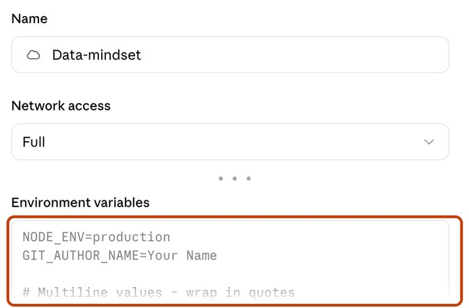

One-time setup
9 short steps, about 15 minutes. Once, before lesson 1. Three parts: your copy of the platform on GitHub, your database on Supabase, and your AI assistant in Claude. Nothing to install.
- A paid Claude plan (Pro or higher), which includes Claude Code. Your AI assistant runs on it; the free plan doesn't include it, and without it you can't do the course.
- A GitHub account and a Supabase account: both free.
Make your own copy (a "fork")
- Open the course repository: github.com/asafbarzilay-web/data-mindset-template
- Click Fork (top right, circled below), then Create fork. It usually takes seconds, but GitHub sometimes needs a few minutes: if it still says "Forking" after a minute, refresh the page.

a repository named your-name/data-mindset-template, with "forked from…" under its name. This is yours: every step from now on happens there.
Working as a group? One of you forks; then Settings → Collaborators → Add people to add the others.
Publish your site
- Go to your fork, the repository you just created:
github.com/your-name/data-mindset-template. Under its name it says "forked from asafbarzilay-web/data-mindset-template". (Not the course's original.) - Click Settings (the last tab along the top), then Pages in the menu on the left.
- Under Build and deployment: Source Deploy from a branch, branch main, folder / (root). Click Save.
- Wait a minute and refresh the page.
"Your site is live at https://your-name.github.io/data-mindset-template/". That's your site; your assistant finds its address by itself later.
If Pages says "Upgrade or make this repository public", you are not on your fork: go back to the first point.

Create a project
- At supabase.com, sign in (with your GitHub account is easiest).
- First time on Supabase? It asks you to create an organization: name it with your own name, type Personal, plan Free.
- Click New project and fill in:
Project name:data-mindset
Database password: click Generate a password, and save it in your password manager
Region: Central EU (Frankfurt) - Click Create new project and wait until it's ready (a minute or two).
the project's home page, with its address https://….supabase.co near the top.
Create the tables
- Click this button:
- In Supabase: SQL Editor → New query. Paste (⌘V), and click Run. If it warns about destructive operations, confirm: the setup only creates what is missing.
a small result table listing sessions, clicks, selections, identities.
Create your sign-in for the dashboard
- Authentication → Users → Add user → Create new user.
- Your email and a password you choose. Keep Auto Confirm User ticked. Click Create user.
Start your assistant in the cloud
No Code tab or no Cloud option? Your plan doesn't include Claude Code (see Before you start).
- In the Claude app: Code → + New.
- Click Local (above the message box) → Cloud → Add cloud environment…
- Name:
Data-mindset. Network access: Full.

- In another tab, in Supabase: Project Settings → API Keys → Secret keys. Copy the key named
default. - Back in the form, in Environment variables, type this and paste your key right after the
=:SUPABASE_SECRET_KEY=sb_secret_… - Click Add environment.

The form, with the box for your key circled. The grey text in it is only an example: type over it.
This key opens your whole database. Put it only here: never in the chat.
- Click the </> button next to Data-mindset.
- First time only: if the list is empty or it offers to connect GitHub, follow its prompts and allow access to
data-mindset-template. - Pick
your-name/data-mindset-template(press Refresh list if needed).
above the message box: Data-mindset · data-mindset-template · main.
You do this once. Next time: + New, and it remembers both.
Register for the course
- In the message box, type: "Register me for the course".
- Your assistant asks three things, one at a time. Paste each answer:
Your name as your lecturer knows you Supabase project URL Project Settings → API · https://….supabase.coPublishable key Project Settings → API Keys · starts with sb_publishable_
it says your details are saved.
Never paste the secret key here. If you do, your assistant tells you how to replace it.
Until you register, your lecturer can't see you or open lessons for you.
Your assistant checks everything, registers you, and you're in
Right after step 8, your assistant checks your setup by itself and reports one line per check:
- database setup: step 5 ran
- analysis is readable: your dashboard can read your views (step 5 set it up)
- capture works: it writes a test visit and a tap exactly as the app does, and finds them in your database
- your assistant can build in your database: step 7's key works (it builds a test view and removes it)
ALL GOOD, then "Reported to your lecturer: setup done." You're registered. If a line says FAIL, it tells you which step to redo.
Then open your dashboard (it gives you the link) and sign in with the email and password from step 6.
your dashboard, with a board for each lesson. In the same message, your assistant tells you what you're working on: lesson 0, Tools and concepts, with the link to its slides. That's it: you're set up.
Next time, start a new session (Code → + New, with Data-mindset on the chip) and ask "What are we working on?"